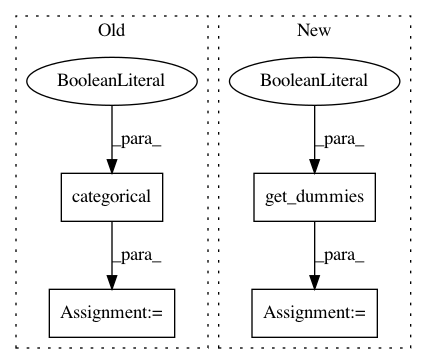

d8c16fb43372826fa3b24d4b166edb2cef7aa96a,statsmodels/discrete/discrete_model.py,,_numpy_to_dummies,#Any#,112
Before Change
// helper for MNLogit (will be generally useful later)
def _numpy_to_dummies(endog):
if endog.dtype.kind in ["S", "O"]:
endog_dummies, ynames = tools.categorical(endog, drop=True,
dictnames=True)
elif endog.ndim == 2:
endog_dummies = endog
ynames = range(endog.shape[1])
else:
After Change
endog_dummies = endog
ynames = range(endog.shape[1])
else:
dummies = get_dummies(endog, drop_first=False)
ynames = {i: dummies.columns[i] for i in range(dummies.shape[1])}
endog_dummies = np.asarray(dummies, dtype=float)
return endog_dummies, ynames
return endog_dummies, ynames
In pattern: SUPERPATTERN
Frequency: 3
Non-data size: 4
Instances
Project Name: statsmodels/statsmodels
Commit Name: d8c16fb43372826fa3b24d4b166edb2cef7aa96a
Time: 2020-07-24
Author: kevin.k.sheppard@gmail.com
File Name: statsmodels/discrete/discrete_model.py
Class Name:
Method Name: _numpy_to_dummies
Project Name: statsmodels/statsmodels
Commit Name: 251cee0f42484dfc01742f040b1bfcd6a640dd6e
Time: 2020-07-02
Author: kevin.sheppard@gmail.com
File Name: statsmodels/genmod/tests/results/results_glm.py
Class Name: Medpar1
Method Name: __init__
Project Name: statsmodels/statsmodels
Commit Name: 251cee0f42484dfc01742f040b1bfcd6a640dd6e
Time: 2020-07-02
Author: kevin.sheppard@gmail.com
File Name: statsmodels/genmod/tests/results/results_glm.py
Class Name: Cancer
Method Name: __init__